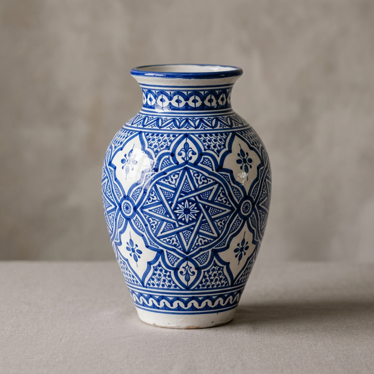

Jarrón Azul de Andalucía
Una obra maestra elaborada a mano con arcilla de las colinas de Sierra Nevada. Sus patrones geométricos nacen de un legado andalusí de más de siete siglos. Cada pincelada de azul cobalto es única.
En cada curva de esta arcilla, dejo una parte de mi silencio y mi devoción por la tierra que piso.
Especificaciones
Cartas de Admiradores
Historias de quienes ya disfrutan de esta obra
"Llegó en perfectas condiciones hasta París. Los colores son aún más vibrantes en persona. Es una joya que ilumina mi salón."
"Se nota el peso de la tradición en cada detalle. Sentir las leves imperfecciones del trabajo manual lo hace infinitamente más valioso que algo industrial."
"Compré este jarrón para mi madre y lloró de la emoción. El embalaje era esquisto y la nota de la artesana un detalle que nunca olvidaremos."